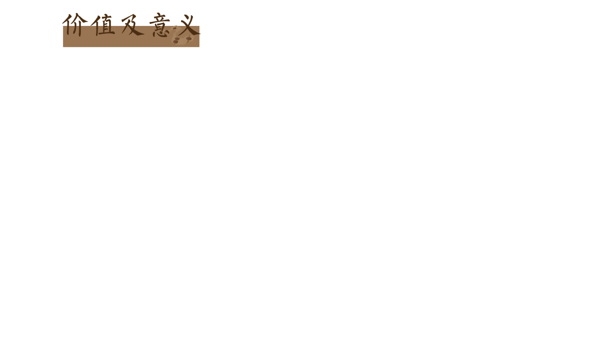
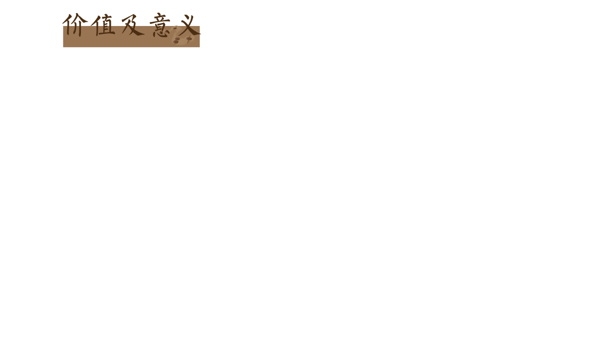

2013年，珠算被联合国教科文组织列入
人类非物质文化遗产代表作名录，这标志着算
盘作为文化遗产的国际认可，也是对算盘文化
保护和传承的重要推动。
算盘承载着中国劳动
人民的生活体验与悠远文明，是中国古代数学
和计算技术的象征。它起源于春秋战国时期，
经过数千年的发展和演变，成为了中国乃至世界
上广泛使用的计算工具。
算盘及其相关的珠算方法在现代教学中仍
然具有独特的意义。它不仅能够弘扬传统文化，
提高文化自信，而且通过手脑协调的操作，可
以开发儿童的智力潜能，提高注意力、记忆力、
阅读能力和思维能力。算盘作为一种教育工具，
能够锻炼人的记忆力、注意力和协调能力，可
以作为对少年儿童进行计算技能训练、开启
智慧之门的途径之一。在一些国家和地区，算盘
仍然被用于启蒙教育中。
在电子计算器出现之前，算盘是主要的计
算工具之一，能够进行加减乘除等基本运算。在
中国古代，运用珠算机械化算法,口诵歌诀,拨珠练
习,即便不懂原理,也能掌握珠算法.不管公学、私塾
和家教,以及商工店主授徒,都能够教学珠算法,即便
小孩子也都能学会和掌握.这种珠算法一直延续到
20 世纪 50 年代,。盘是商人和账房先生进行经济
活动不可或缺的工具，它的使用大大提高了运算
速度和效率。
算盘对汉语词汇和表达方式也产生了影响，
如“三下五除二”、“运筹帷幄”等成语均与算盘使
用有关。算盘作为古代计算工具，对于研究古代
商业、经济、数学等领域的历史具有重要价值。
算盘不仅在中国，在亚洲其他地区以及世界其他
一些地方也有使用，促进了不同文化之间的交流。